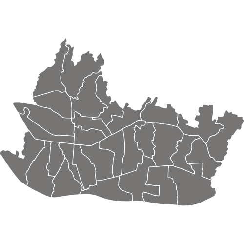

Bandung
Sebuah kota sekaligus menjadi ibu kota provinsi di Provinsi Jawa Barat, Indonesia. Kota Bandung juga merupakan kota terbesar ketiga di Indonesia, setelah Jakarta dan Kota Surabaya. Kota ini menjadi kota terpadat kedua di Indonesia setelah Jakarta dengan kepadatan mencapai 15.051 jiwa/km².
